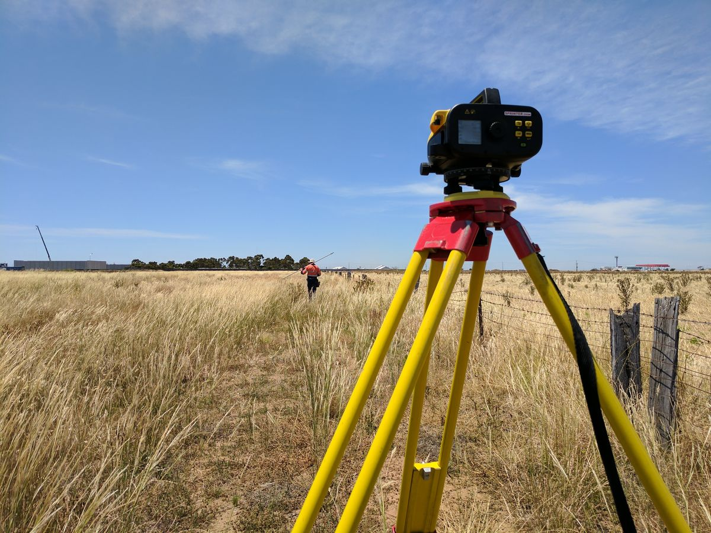
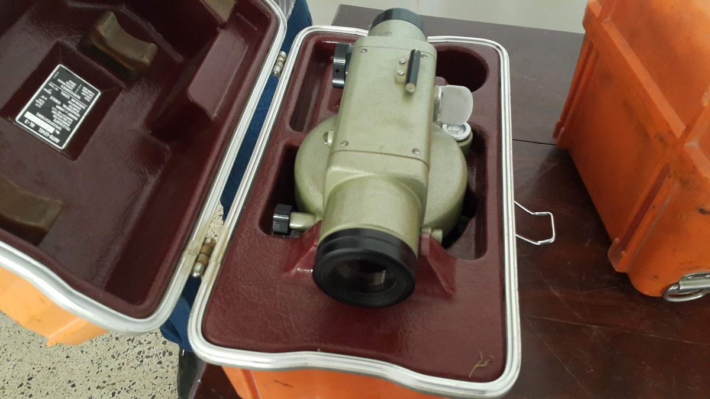
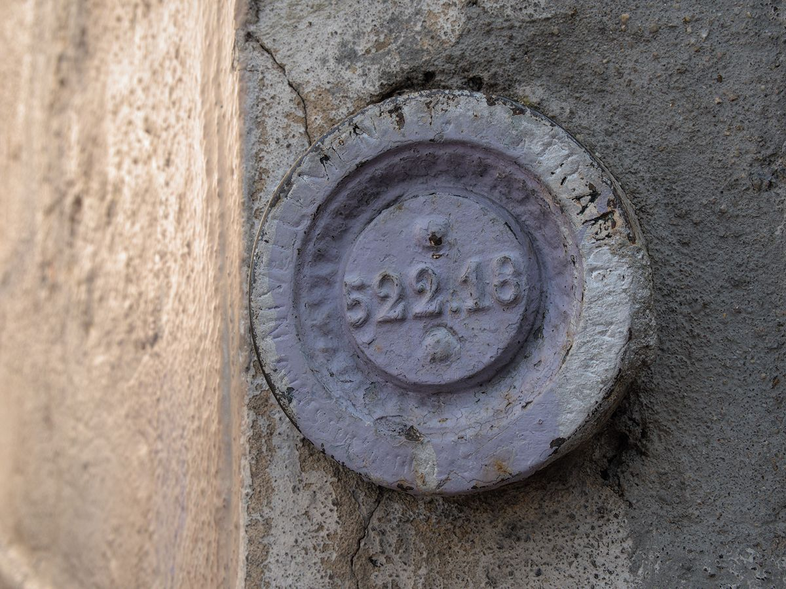
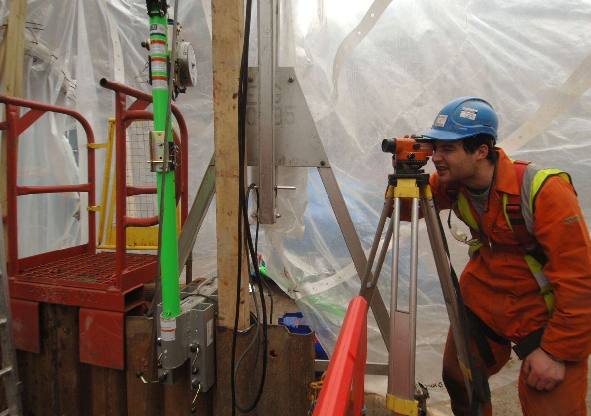
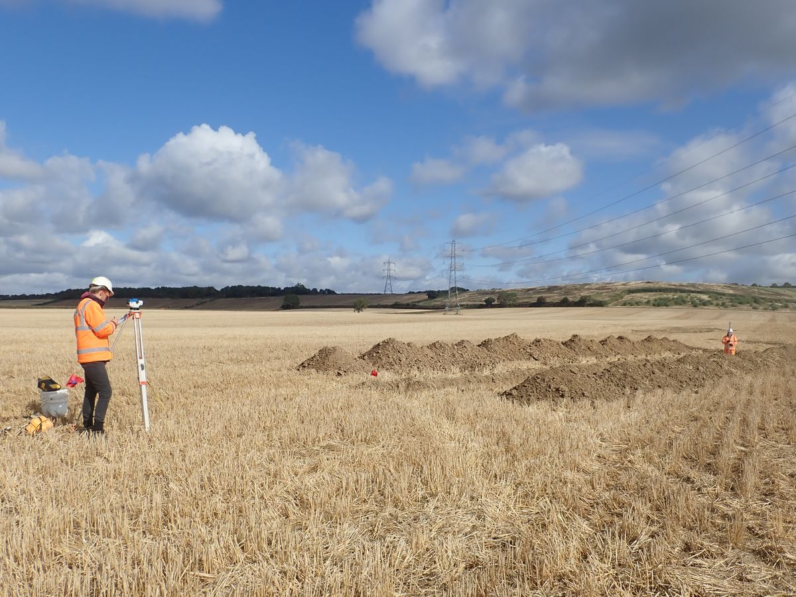

1The instrument

An automatic level gives you one thing: a horizontal line of sight. It does not measure angles, and it does not measure distance except roughly. Everything you get from it comes from comparing rod readings taken along that one horizontal line.
What makes it "automatic" is the compensator — a small prism assembly hung on wires inside the telescope. You only bring the circular bubble to the middle, which gets the instrument close to level; the compensator swings under gravity and bends the line of sight the rest of the way to horizontal. That is why there is no long bubble tube to re-centre before every sighting, and it is also why the instrument has to be treated as a pendulum: it needs a moment to settle, and it can jam.
Benchmark (BM) — a permanent point whose elevation is known or assumed. Turning point (TP) — a temporary point, chosen only so the instrument can move forward; you read a foresight onto it, move the level, and read a backsight from it. Backsight (BS) — a reading on a point whose elevation you already have; it goes into the instrument height. Foresight (FS) — a reading on a point whose elevation you want; it comes out of the instrument height.
2Before you go out


What to bring. Automatic level and tripod; a levelling rod; a rod level (the small circular bubble that clamps to the rod); turning plates or a solid nail-headed stake for each turning point; field book and a pencil, not a pen; and the elevation of the benchmark you are starting from.
Watch these first. Three short videos show the motions this manual describes; watch them before the lab so the instrument is not new to you when you get outside.
- Setting Up the Automatic Level — Illinois Surveyor (Illinois Professional Land Surveyors Association).
- Surveying 2/3 (Differential Leveling Exercise) — John Edwards.
- Surveying 3 — Two peg test — OTEN Building & Construction.
Run the two-peg test before the day's work and again at the end of it, and write both into the field book. A level that has been jolted in a truck can read perfectly level and still be wrong by a measurable amount over a long sight — and you will not find out from the readings themselves.
3Setting up
- Pick the spot. Roughly midway between the two points you are about to read, on firm ground, out of the way of traffic. Midway matters — see step 5.
- Spread and plant the tripod. Legs well apart, tripod head roughly level by eye and about chest height, then tread each leg firmly into the ground. On pavement, set the points in cracks or joints so they cannot slide.
- Mount the instrument. Thread the tripod screw home firmly, not tight enough to strain it. Keep one hand on the level until the screw is engaged.
- Centre the circular bubble — two screws, then one. Turn the telescope so it is parallel to any two of the three levelling screws. Turn those two in opposite directions at the same time; the bubble follows your left thumb. Then bring it the rest of the way in with the third screw alone. Repeat once; it converges quickly.
- Check the compensator. Sight the rod, then tap the instrument lightly or press the compensator check button if it has one. The crosshair should swing a little and come back to the same reading. If it does not return, the compensator is jammed — stop and get another instrument.
- Kill the parallax. Point the telescope at the sky or a blank wall and turn the eyepiece until the crosshairs are as black and sharp as they get. Only then use the focusing knob to bring the rod into focus. Move your eye up and down at the eyepiece: if the crosshair appears to slide along the rod, the parallax is not gone — repeat.
- Frame the rod. Use the tangent drive to bring the vertical crosshair onto the middle of the rod so you are reading the face square-on.
- Do not re-level between sights. Once the bubble is centred, the compensator handles the rest. If you knock a leg, re-level and re-read everything from that setup.
4Reading the rod

A US levelling rod is graduated in feet, tenths and hundredths. Read it in that order: the foot number below the crosshair, the tenth below it, then estimate the hundredth from the small blocks. Write down all three digits every time — 4.32, never 4.3.
The reticle carries three horizontal wires. The middle one is the reading. The upper and lower ones — the stadia wires — give you the distance to the rod, which is how you keep your sights balanced without a tape:
The rod must be plumb, not merely upright. Use the rod level; without one, wave the rod slowly toward and away from the instrument and take the smallest reading, which is the one taken when the rod passed through vertical. A rod leaning 3° at a 6 ft reading is 0.008 ft too high — bigger than the tolerance you are working to.
5Running the loop

Levelling walks a known elevation forward. From a setup you read back to a point you know, which tells you how high the line of sight is; then you read forward to a point you want, which tells you how far below that line it sits.
Balance the sights. Set up midway so the backsight and foresight distances are within about 30 ft of each other. Any small tilt left in the line of sight then throws both readings the same way and cancels in the difference — and so do earth curvature and refraction. This one habit does more for your closure than anything else on the list.
| Item | Limit |
|---|---|
| Maximum sight length | 300 ft |
| Difference between back and fore sight lengths, per setup | 33 ft |
| Same, accumulated over the loop | 33 ft |
| Minimum ground clearance of the sight line | 1.6 ft |
| Maximum loop misclosure | 0.06 ft × √E |
| Two-peg (collimation) test | daily · 0.007 ft in 200 ft |
E is the length of the loop in miles. Second-order work tightens the two-peg limit to 0.003 ft in 200 ft. On a hot day over pavement or bare ground the air shimmers and the rod dances: cut the sight length by a third or more, whatever the table allows.
6Closing the loop
A level run that does not come back to a known elevation proves nothing. Finish where you started — or on a second benchmark — and do three things before you leave the site.
- Check the arithmetic. Sum the backsight column and the foresight column. ΣBS − ΣFS must equal the last elevation minus the first. On a closed loop that means ΣBS and ΣFS should be equal. This checks your adding, not your levelling.
- Find the misclosure. The elevation you compute back at the starting benchmark minus its known elevation. This is the error in the work.
- Compare it with the allowance. Third order allows 0.06 ft × √E, with E the loop length in miles. Over the allowance, the loop is rejected — re-run it; do not adjust it.
If it closes, distribute the correction. Divide the misclosure by the number of setups and apply it cumulatively: the first computed elevation gets one share, the second two shares, and the last gets all of it, which brings the final elevation exactly back onto the benchmark. The benchmark you started from is never adjusted.
7The two-peg test
The compensator can be out of adjustment: it settles, but not quite on horizontal. The error is invisible on a balanced loop — it cancels — and it grows with sight length, so it shows up the moment your sights are uneven. The two-peg test measures it directly.
- Drive two pegs, A and B, about 200 ft apart on reasonably flat ground.
- Setup ①, midway. Read the rod on A and on B. The difference a₁ − b₁ is the true difference in elevation, because equal sight lengths cancel any tilt.
- Setup ②, beside A. Move the instrument a few feet behind A and read both pegs again. The difference a₂ − b₂ is what the instrument says, with the tilt acting over the full 200 ft on the B sight.
- Compare. The collimation error is (a₂ − b₂) − (a₁ − b₁), expressed as feet in 200 ft. Third order allows 0.007 ft; second order, 0.003 ft.
- If it fails, the reading that should appear at B from setup ② is a₂ − (a₁ − b₁). Adjust the reticle to that reading following the maker's instructions, then run the test again to prove it.
8Worked example
A four-setup loop that leaves benchmark BM-1, turns three times and comes back to it. BM-1 is assumed to be 100.00 ft. Sights were about 150 ft, so the loop is roughly 1,200 ft — 0.227 mile. The example numbers are made up but typical.
| Station | BS (+) | HI | FS (−) | Elevation | Adjusted |
|---|---|---|---|---|---|
| BM-1 | 4.32 | 104.32 | — | 100.00 | 100.00 |
| TP1 | 5.18 | 102.75 | 6.75 | 97.57 | 97.58 |
| TP2 | 2.86 | 102.57 | 3.04 | 99.71 | 99.72 |
| TP3 | 8.11 | 103.26 | 7.42 | 95.15 | 95.17 |
| BM-1 | — | — | 3.28 | 99.98 | 100.00 |
| Σ | 20.47 | — | 20.49 | — | — |
Arithmetic check. ΣBS − ΣFS = 20.47 − 20.49 = −0.02 ft, and the last elevation minus the first is 99.98 − 100.00 = −0.02 ft. The page adds up.
Misclosure and allowance. The loop came back 0.02 ft low. At 1,200 ft the loop is 0.227 mile, so third order allows 0.06 × √0.227 = 0.029 ft. The work is inside the allowance, so it can be adjusted rather than re-run.
Adjustment. Four setups, so each carries 0.02 ÷ 4 = 0.005 ft of the correction, applied cumulatively: +0.005 at TP1, +0.010 at TP2, +0.015 at TP3, +0.020 at the closing shot — which lands BM-1 back on 100.00 ft exactly. Those are the adjusted elevations in the last column.
The same day's two-peg test, taken before the loop:
| Setup | Reading on A | Reading on B | A − B |
|---|---|---|---|
| ① midway | 5.284 | 4.716 | 0.568 — true |
| ② beside A | 4.958 | 4.386 | 0.572 — apparent |
The collimation error is 0.572 − 0.568 = 0.004 ft in 200 ft. That passes third order (0.007 ft) and fails second order (0.003 ft): fine for a construction loop, not fine for control work. Had it needed adjusting, the reading that should have appeared at B from setup ② is 4.958 − 0.568 = 4.390 ft, and the reticle would be moved 0.004 ft to suit.
9Common mistakes
- Leaving the parallax in. If the crosshair slides on the rod when you move your eye, your readings move with it. Focus the crosshairs on the sky first, every setup.
- Unbalanced sights. A long backsight and a short foresight let collimation error, curvature and refraction into the answer instead of cancelling them. Pace it out; keep the two within 30 ft.
- A rod that is not plumb. Leaning always reads high. Use the rod bubble, or wave and take the lowest reading.
- Moving the turning point. A TP has to be the same physical point for its foresight and its backsight — a nail head, a turning plate, the top of a firm stake. Not the loose soil beside it.
- Reading two digits. "4.3" is not a reading. Three digits, always, and record it before you look away from the eyepiece.
- Adjusting a loop that failed. The allowance decides whether you may adjust at all. Over it, the run is re-done — distributing a blunder just hides it.
- Skipping the peg test. It takes ten minutes and it is the only thing that finds an instrument reading level and lying.
10Key takeaways
- Centre the circular bubble and let the compensator finish the job — then prove it still swings freely before you read.
- Every reading is three digits off a plumb rod, and the mean of the outer two wires equals the middle one.
- HI = elevation + BS; elevation = HI − FS. Balanced sights cancel what you cannot see.
- Close the loop, check ΣBS − ΣFS, compare the misclosure with 0.06 ft × √E, and adjust only if you are inside it.
Sources: Caltrans Surveys Manual, Chapter 8, "Differential Leveling Survey Specifications" (2006), whose Table 8-2 supplies the third-order limits and the two-peg tolerances quoted here; the Middle Tennessee State University surveying laboratory notes on differential levelling and stadia, for the field-book form, the sight-length practice and the closure adjustment; and standard definitions of BS, FS, HI and TP as given in university surveying lecture notes. The videos linked in section 2 are recommended viewing and are not sources for the procedure above.
Photo credits: Survey level and field technician by Cvstr, CC BY 4.0; Level (instrument) by Kskhh, CC BY-SA 4.0; Archaeologist taking levels at Liverpool Street by Crossrail/MOLA, CC BY 4.0; Archaeologists using a dumpy level by Oxford Archaeology, CC BY 4.0; Repère de nivellement, Saint-Étienne by Touam, CC BY-SA 4.0; all via Wikimedia Commons. The photos were resized, cropped and recompressed for the web.
{kind=link}
.jpg){kind=link}
.jpg){kind=link}
{kind=link}
{kind=link}